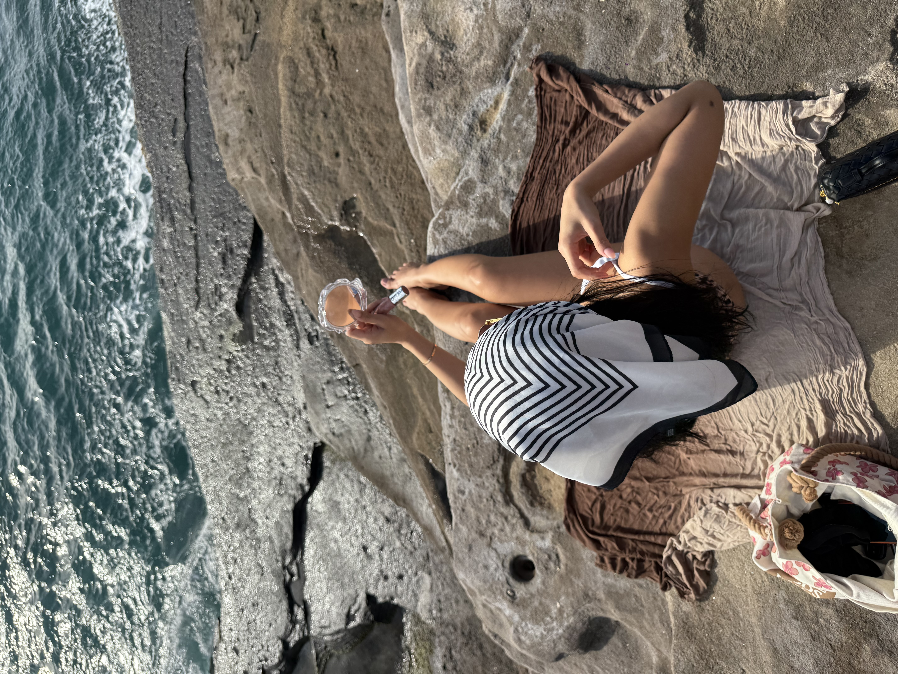

01
Lymphatic Release
Gentle drainage-inspired massage helps reduce heaviness, soften puffiness, and bring back a lighter facial shape.
Face Spa Studio
BOTANGLOWSKIN blends sculpting massage, lymphatic flow, and skin recovery into treatments that feel quiet, grounded, and visibly refined.

Studio mood
Soft light, intentional touch, and treatments paced like a full-body exhale.
Treatment Philosophy
The studio approach is calm on purpose: less overstimulation, more meaningful touch, and a finish that leaves skin looking lifted instead of overworked.
01
Gentle drainage-inspired massage helps reduce heaviness, soften puffiness, and bring back a lighter facial shape.
02
Focused facial work supports definition through the cheeks, jawline, and eye area with a naturally refined finish.
03
The last layer of every ritual is skin comfort: easing tension, supporting balance, and leaving a polished healthy sheen.

Our Approach
BOTANGLOWSKIN pairs visible sculpting techniques with a slower treatment rhythm so the entire appointment feels restorative while the results stay clean, lifted, and believable.
Signature Treatments
Deep sculpting massage, lymphatic work, and a glow-finishing mask for skin that looks refreshed and more defined.
A reset treatment for stressed and dull skin, focused on decongesting, calming, and bringing back a rested surface.
Targeted contour support through the eye area, cheeks, and jawline when you want a shorter but more precise lifting session.
Beyond the treatment room
Need ongoing support? The virtual consultation turns your goals, current routine, and skin concerns into a personalized plan you can follow at home.
See the virtual consultation